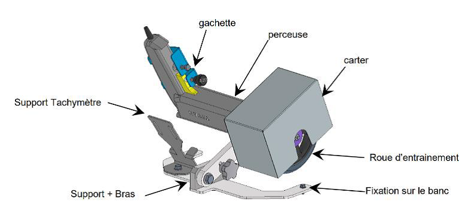
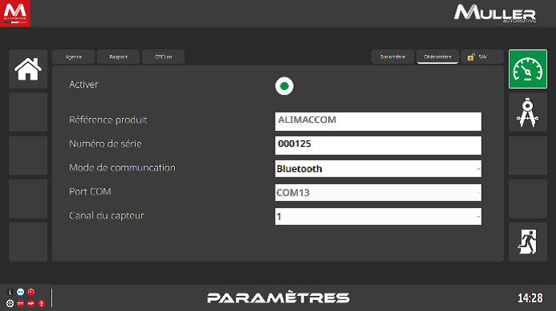
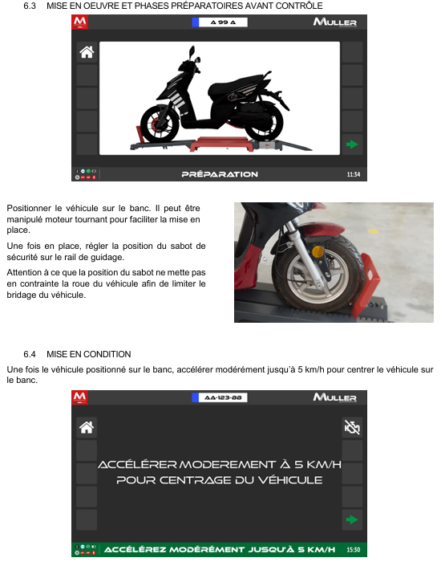
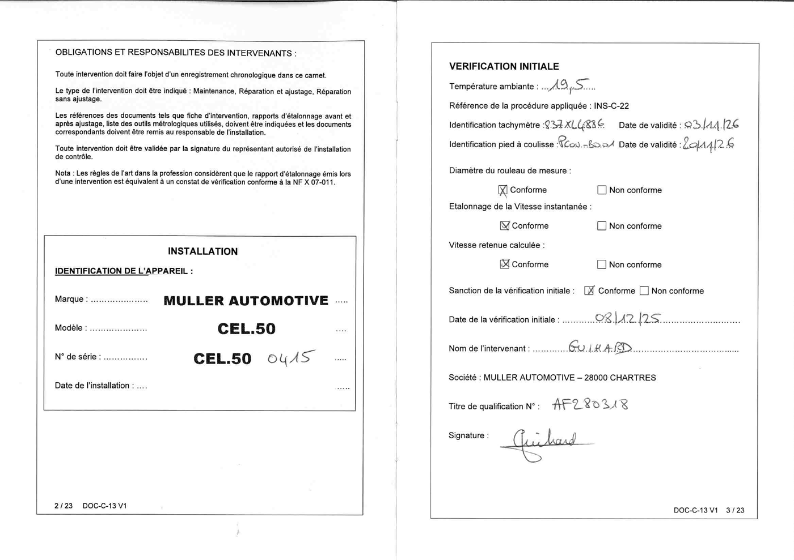
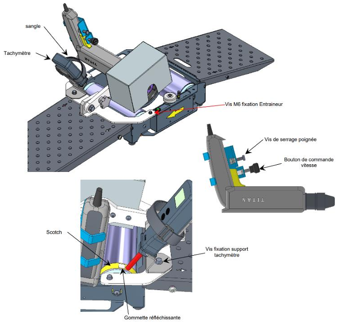
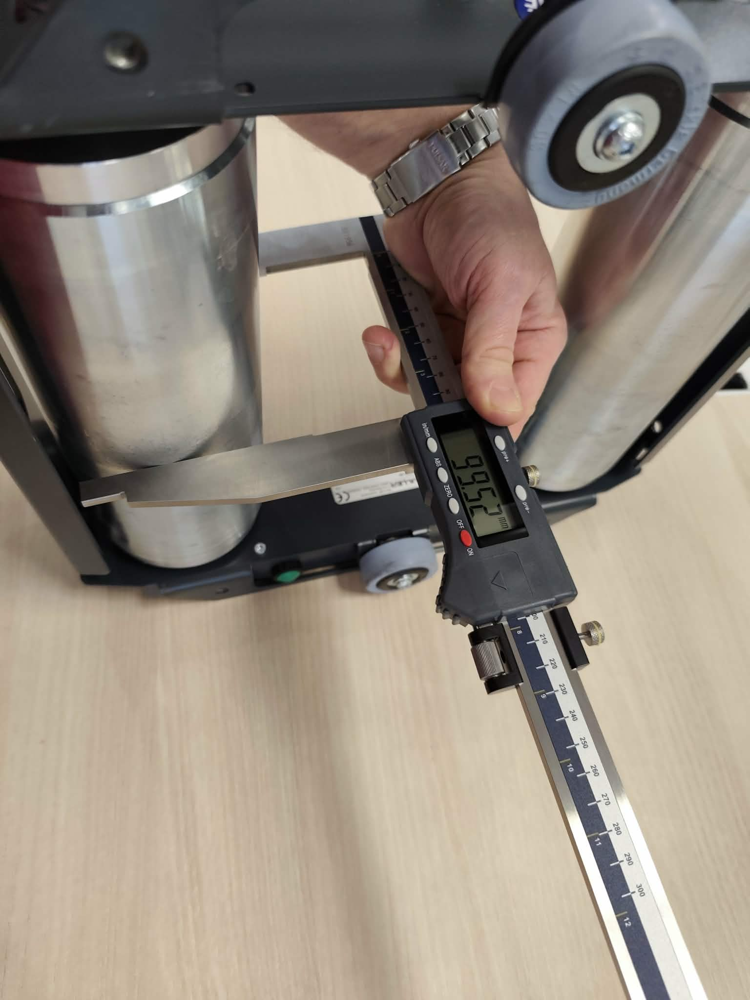
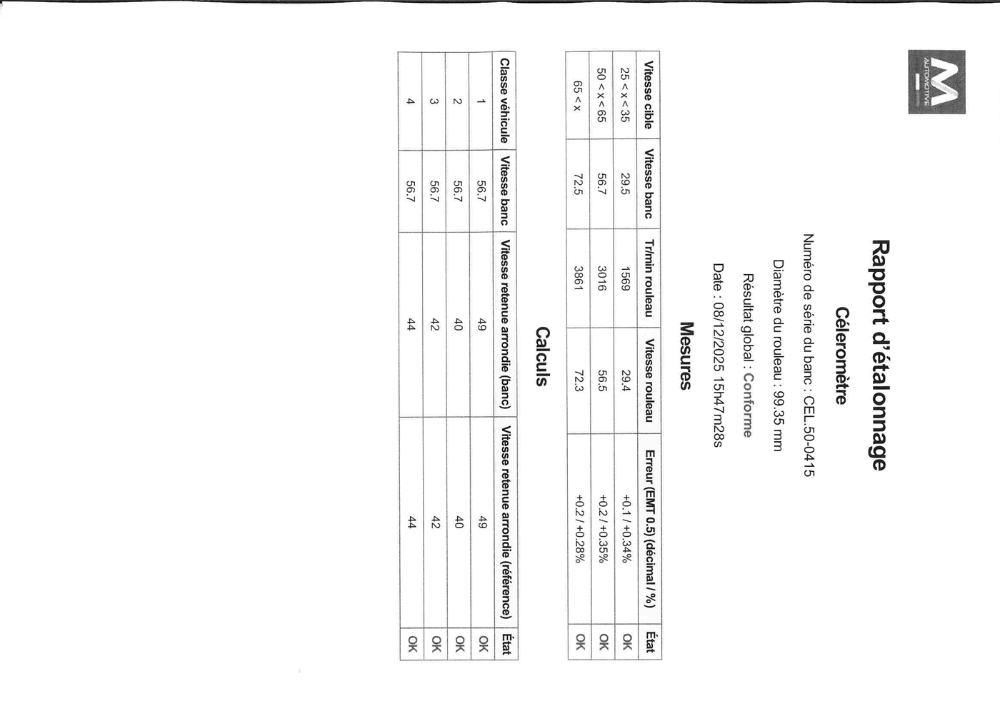

Le CEL 50 est un banc de mesure de la vitesse maximale des véhicules de catégorie L1e (cyclomoteurs ≤45 km/h). Il permet de détecter les modifications illicites du limiteur de vitesse. Son utilisation est obligatoire depuis mars 2026 dans tous les centres CT agréés.
📋
Références réglementaires
CDC-10 (index A puis B) · IT CL F7B · INS-C-22 · Homologation OTC (Organisme Technique Central) · Homologation UTAC (Union Technique de l'Automobile)
Objectifs de la formation
1
Présentation & spécifications
Comprendre le rôle du CEL50, ses specs techniques et son homologation réglementaire.
2
Installation & configuration Bluetooth
Déballage, assemblage, appairage Bluetooth, installation du logiciel (NT 1252).
3
Mise en service réglementaire
Les 5 vérifications obligatoires avant la première utilisation en centre CT.
4
Maintenance & étalonnage
Opérations périodiques, vérification des rouleaux, étalonnage pied à coulisse et tachymètre.
Qualification
Qualification techniciens
Formation qualifiante constructeur
Qualification méthodes
INS-C-22
Qualification moyens
Pied à coulisse · Tachymètre · Outil UTAC calcul vitesses
Vue d'ensemble du banc CEL 50 — composants numérotés (1 à 7) correspondant au descriptif ci-dessous
Constitution du banc
1
Sabot de blocage roue réglable
Maintien du véhicule lors du test
2
Dispositif de positionnement roue avant
Équipé de deux galets de roulage
3
Rampe d'accès de sortie
Accès et sortie du véhicule
4
Repose-pieds
Option disponible
5
Châssis métallique
Support des deux rouleaux en acier équilibrés
6
Rampe d'accès d'entrée
Montée du véhicule sur le banc
7
Galets de roulage
Support roue avant du véhicule
⚙️
Capteur de vitesse
Fixé sur le boîtier de commande électronique avec un disque codeur à 8 signaux sur le rouleau instrumenté. Entrefer de fonctionnement : 1 ± 0,4 mm (capteur inductif).
Chapitre 03 — Réglementation
Catégorie L1e
Le CEL 50 est dédié aux véhicules de catégorie L1e. Comprendre cette classification est essentiel pour réaliser les contrôles correctement et interpréter les résultats.
Définition L1e
📄
Catégorie L1e — véhicules deux-roues concernés
Vitesse maximale ≥ 6 km/h et ≤ 45 km/h · Moteur ≤ 50 cm³ (thermique) · Puissance ≤ 4 kW (électrique)
4 classes L1e
Classe 1
⚡ Motorisation électrique
Code énergie EL. Puissance ≤ 4 kW.
Classe 2
🔧 Règlement 168/2013
Réceptionné conformément au règlement européen 168/2013.
Classe 3
🏍 Antérieur 168/2013 — 2T
Motorisation thermique deux temps réceptionnée avant le règlement.
Classe 4
🏍 Antérieur 168/2013 — 4T
Motorisation thermique quatre temps réceptionnée avant le règlement.
Objectif du contrôle
Vitesse légale max
45 km/h
Dépassement constaté
Défaillance majeure → contre-visite obligatoire
Motif de non-conformité
Débridage / modification illicite du limiteur
Obligation depuis
Mars 2026
🔴
Conséquences d'une non-conformité
Si le véhicule dépasse 45 km/h lors du test : le contrôle est ajourné (contre-visite). Le véhicule doit être remis en conformité (rebridage) avant de repasser. Aucune dérogation possible.
Sortir le châssis, fixer les rampes d'accès d'entrée et de sortie. Vérifier l'état général des rouleaux et accessoires.
2
Vérification des pieds
Contrôler et régler les quatre pieds de mise à niveau du banc. Le banc doit être parfaitement stable et horizontal.
3
Bridage du banc
Pour la version fixe : fixer le banc au sol selon le plan de pose. Vérifier la fixation du rail de guidage.
Installation logicielle — NT 1252
1
Suivre la NT 1252
Document de référence : NT 1252 — Procédure d'installation 52400-A. Disponible dans l'onglet Documents.
2
Appairage Bluetooth
Ouvrir les paramètres Bluetooth Windows → Ajouter un appareil → Rechercher le banc célérométre.
3
Code PIN Bluetooth
Le code PIN est le numéro de série du banc (inscrit sur la plaque signalétique).
4
Paramétrage logiciel
Ouvrir le logiciel → Paramètres → Onglet Célérométre (visible après saisie du code SAV) → Configurer la liaison.
Outil d'entraînement — étalonnage

Ensemble entraineur AM124230 — perceuse filaire 3000 rpm, support tachymètre, roue d'entraînement, fixation sur banc

Paramétrage Bluetooth dans le logiciel — onglet Célérométre (visible après code SAV) : N° série, mode Bluetooth, port COM
💡
Versions disponiblesVersion mobile CEL.50 : avec rampes amovibles (15,5 kg) — déplaçable entre postes. Version encastrée CEL.50E : installation définitive dans la fosse ou au sol.
Chapitre 05 — Mise en service
Mise en service réglementaire
La mise en service valide la conformité réglementaire du dispositif avant toute utilisation officielle en centre CT. Elle comporte 5 étapes obligatoires définies par l'INS-C-22.
Les 5 étapes réglementaires
1
Carnet de suivi
Vérifier la présence du carnet de suivi associé au dispositif. Le renseigner : nom, adresse, date de mise en service.
2
Notice d'utilisation
Vérifier la présence de la notice DOC-M-03-CEL50-FR V1. Disponible sur www.mullerautomotive.fr
3
Raccordement informatique
Vérifier le raccordement correct à l'outil informatique du centre (OTC-LAN). Test de liaison obligatoire.
4
Test de fonctionnement
Réaliser 2 tests sur véhicule L1e (ou outil de simulation) : un test conforme (C) et un test non conforme (NC) selon INS-C-22.
5
Test transmission OTC-LAN
Vérifier la transmission correcte des résultats vers l'outil informatique du centre (liaison OTC-LAN).
Interface logiciel — procédure de test

Interface logiciel CEL50 — phase préparation : positionnement véhicule sur banc, réglage sabot, centrage à 5 km/h avant le test
Fiche de vérification initiale officielle

Fiche de vérification initiale — document officiel Muller Automotive à compléter lors de chaque mise en service (identification appareil, vitesses testées, signatures)
⚠️
Condition impérative pour les tests
Les tests de fonctionnement doivent être réalisés avec un véhicule de catégorie L1e ou un dispositif permettant de simuler une roue de véhicule dont la vitesse est connue et certifiée.
Carnet de suivi — mise en service
Inscrire la date et heure du ticket conforme (C)
Inscrire la date et heure du ticket non conforme (NC)
Conserver les impressions des deux tickets dans le carnet
Vérifier la cohérence N° de série banc / carnet de suivi
Faire signer le carnet par le représentant du centre CT
Test de résistance à la rotation
Lancer les rouleaux à la main — ils ne doivent pas s'arrêter en moins de 20 secondes. Si le temps est inférieur, nettoyer et investiguer (roulement défectueux, frottement anormal).
Capteur de vitesse — vérification montage
Type de capteur
Inductif
Entrefer de fonctionnement
1 ± 0,4 mm
Disque codeur
8 signaux par tour — ne doit pas être voilé
Jeu axial rouleau
Le rouleau avec codeur ne doit pas bouger axialement
Traçabilité maintenance
Rédiger une fiche d'intervention détaillée pour toute intervention
Fiche signée par le représentant du centre CT
Répertorier dans le carnet de suivi (date + heure)
Imprimer et conserver le rapport de maintenance
Chapitre 07 — Étalonnage
Étalonnage & Traçabilité
L'étalonnage du CEL 50 garantit la fiabilité des mesures de vitesse. Il est réalisé par un technicien qualifié à l'aide d'outils de référence homologués selon la méthode DOC-M-03-CEL50CTL1-FR.
Tachymètre monté sur banc

Tachymètre fixé sur le banc avec sangle — gomette réfléchissante sur rouleau, vis fixation tachymètre, bouton commande vitesse

Mesure diamètre rouleau au pied à coulisse — 1 point au milieu du rouleau (valeur lue : ≈25,66 mm de rayon soit ≈99,5 mm de diamètre)
Rapport d'étalonnage — exemple conforme

Rapport d'étalonnage CEL50 — exemple de résultat conforme : 3 classes de vitesse testées, erreurs dans les tolérances (+0,1/+0,35%), état OK — à imprimer et conserver dans le carnet de suivi
Effectuer 1 mesure au milieu du rouleau (point central). Position reproductible et représentative.
2
Valeur attendue
Diamètre Muller : 99,5 ± 0,1 mm. Norme CDC10 : 100 ± 1 mm. Si hors tolérance → remplacement du rouleau.
3
Enregistrement
Consigner la valeur mesurée dans le rapport d'étalonnage avec date, heure et identifiant technicien.
Mesure vitesse — tachymètre
⚠️
Attention découpe de l'étiquette
Selon le découpage de l'étiquette tachymètre appliquée sur le rouleau, cela peut produire un défaut de lecture du tachymètre. Vérifier l'alignement de l'étiquette réfléchissante avant mesure.
Enregistrements obligatoires
Rapport de test
À imprimer après chaque test validé. Répertorier dans le carnet de suivi (date + heure).
Rapport d'étalonnage
À imprimer après chaque étalonnage validé. Consigner dans carnet de suivi.
Fiche d'intervention
Pour toute intervention. Détail des travaux, état du célérométre. Signature représentant CT.
Non-conformité étalonnage
Le dispositif est rendu inopérant jusqu'à levée de la NC.
Compléments carnet — lors de chaque visite
Rajout à la main : date + heure du ticket conforme (C)
Rajout à la main : date + heure du ticket Non Conforme (NC)
Lors des visites périodiques : date + heure ticket étalonnage
Tous documents remis au représentant du centre CT
Chapitre 08 — Ressources
Documents de référence
Ensemble des documents techniques et réglementaires associés au CEL 50. Ces documents font foi lors des interventions et contrôles.